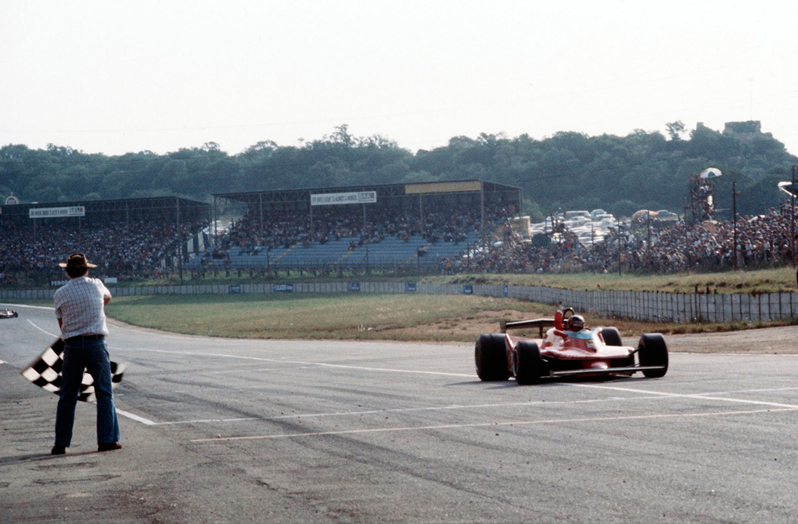
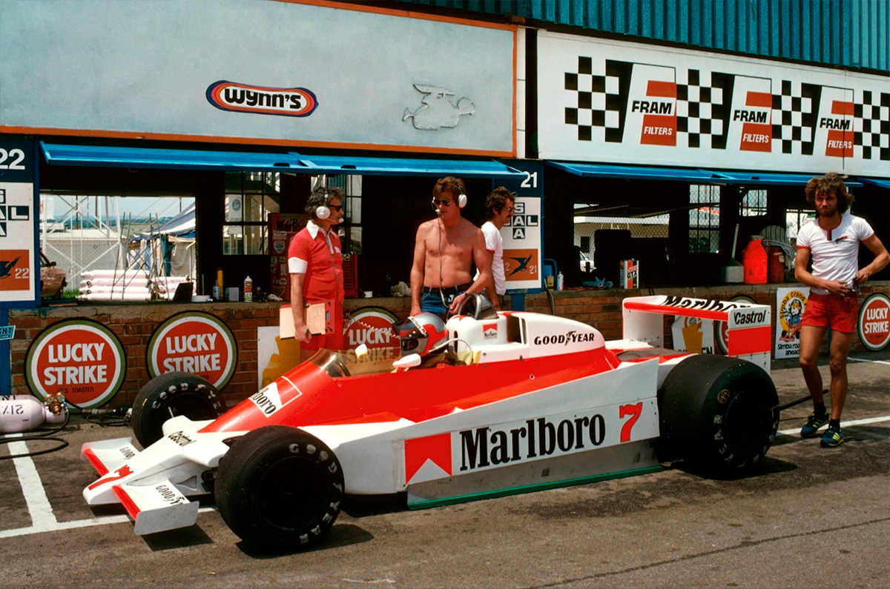
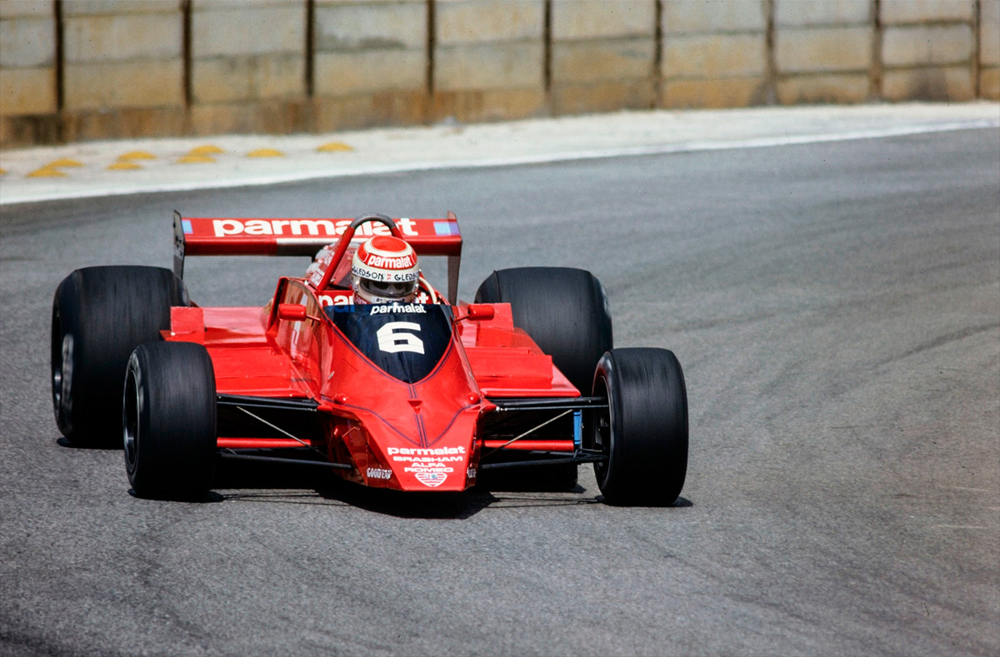
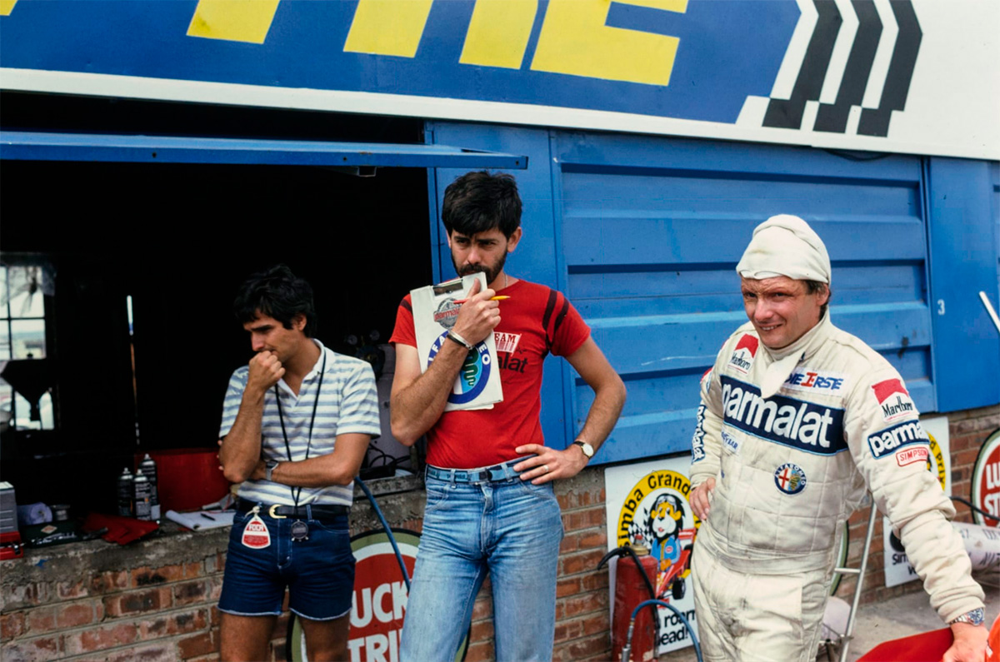
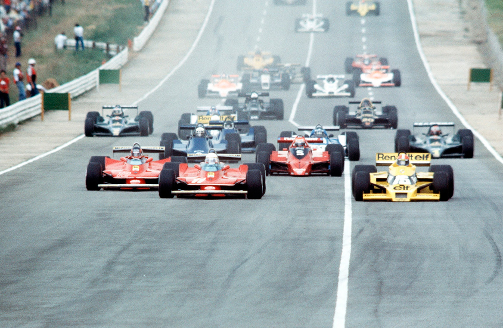
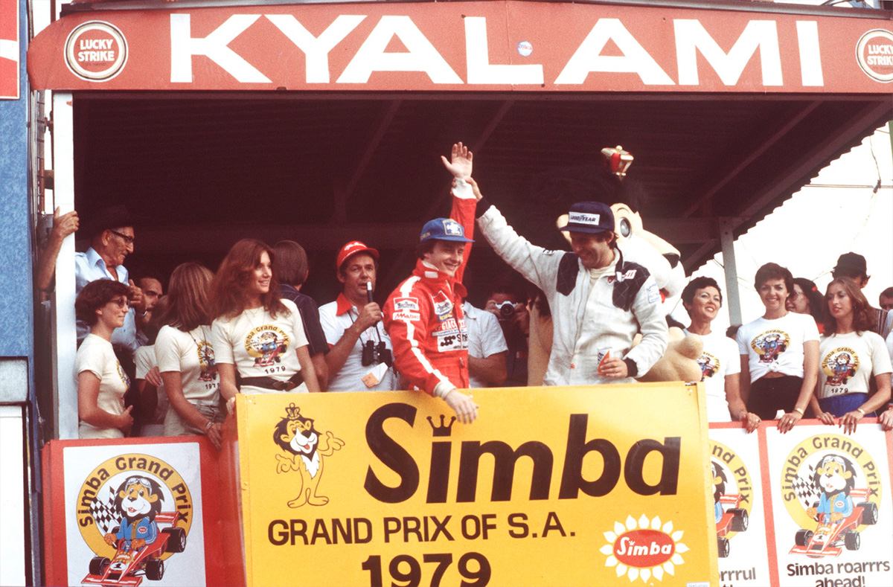

FERRARI EM 1º E 2º NA ESTREIA DOS T4

Pela primeira vez na Formula 1, um novo carro estreia com as duas primeiras colocações, através de Villeneuve e Scheckter. Piquet foi um bom 7º e Emerson estreou o F6.
Alvaro Teixeira
Repentinamente, a Fórmula 1 moderna começa a atingir um nível de competitividade raras vezes apresentado, desde a sua criação no ano de 1950. Um novo projeto, por mais perfeito que seja, já não garante à sua equipe um domínio total da categoria por um maior período como costumava acontecer em um passado ainda bastante recente.
E os exemplos, são bem significativos. No final da última temporada, quem poderia afirmar em sã consciência que na primeira prova de 1979, os Lotus já seriam facilmente dominados? Hoje, seus predicados de grande carro de competição já são bastante questionáveis. Mário Andretti e Carlos Reutemann, no momento, têm mesmo que se conformar com as posições secundárias. Quando o Ligier JS-11 estreou magnificamente na Argentina e duas semanas depois repetiu o desempenho em Interlagos, não houve quem não predissesse para o novo carro francês uma predominância quase absoluta durante toda a atual temporada. Mas, na terceira prova, na África do Sul, entretanto, os Ligier mais pareciam um arremedo dos carros vitoriosos na América do Sul. Os novos Ferrari 312 T4 estrearam e, a exemplo dos próprios Ligier, venceram. Nunca um novo modelo de carro havia conseguido vencer, em dobradinha, logo em sua primeira disputa. Como os Lotus, no final da última temporada, e os Ligier, logo depois dos Grandes Prêmios da Argentina e do Brasil, os novos Ferrari são considerados, no momento, praticamente imbatíveis. Resta saber, até quando.
Gilles Villeneuve, pilotando com maestria e com uma mistura perfeita de habilidade e sorte, foi o grande vencedor do Grande Prêmio da África do Sul. Em sua segunda vitória na Fórmula 1, o piloto canadense deixou claro que a maturidade de seu estilo de pilotar já é uma realidade. Do Villeneuve da temporada de 1977 e de alguns acontecimentos negativos amplamente divulgados em 1978, muito pouco resta. Do que sobrou, o ponto alto continua a ser o arrojo e principalmente o estilo atrevido de dirigir, quase sempre atravessado, exigindo ao máximo seu equipamento. Mas, se Villeneuve venceu e todas as glórias foram para o novo Ferrari, projetado por Mauro Forghieri, a grande estrela da prova foi mesmo o imutável Jody Scheckter. Sua performance não poderia ter sido mais perfeita. Optou pelos pneus slick para pista seca – juntamente com Patrick Tambay, Patrick Depailler e Nelson Piquet – quando o circuito de Kyalami ainda apresentava muita água acumulada, e não fosse uma freada mais violenta que acabou deformando um pneu traseiro, teria sido um vencedor de méritos. Afinal, para se vencer, além da pilotagem é necessário também optar pelo equipamento certo, no momento certo. E foi o que Scheckter fez. Assim mesmo, depois de uma parada nos boxes para troca de pneus, o sul-africano conseguiu descontar, já próximo do final da prova, uma diferença de mais de quarenta segundos. Quando a bandeira quadriculada foi agitada, Villeneuve vinha a menos de 4 segundos à frente de Jody Scheckter.

Os brasileiros
Para os brasileiros, o Grande Prêmio da África teve diferentes emoções. Depois de uma conturbada classificação, onde obteve o décimo oitavo tempo, Emerson Fittipaldi, influenciado principalmente por Wilsinho e Ralph Bellamy, resolveu estrear o novo carro, o F-6. Apesar de contrafeito, Emerson acabou cedendo às justificativas de Wilsinho. “Precisamos definir o que deve realmente ser desenvolvido ou alterado no F-6 e isto só se consegue testando-o em condições de corrida. Vamos sacrificar o resultado de um Grande Prêmio em função de um desenvolvimento mais imediato. Basta ver o exemplo do Niki Lauda. Se ele não tivesse insistido em correr com o novo Brabham BT-48 na Argentina e no Brasil, agora, com toda a certeza, não conseguiria marcar o quarto melhor tempo”. Para Wilsinho, o F-6 é um projeto que ainda vai surpreender muita gente e, durante a prova, uma coisa ficou clara: nunca, um Copersucar Fittipaldi foi tão rápido nas retas. Em Kyalami, famosa por suas longas retas, o F-6 conseguiu a terceira melhor marca de velocidade final: 289,51 km/h, só sendo batido, pela ordem, pelo Tyrrell de Jean Pierre Jarier e o Lotus de Carlos Reutemann.
Para Nelson Piquet, a sétima posição conquistada ao final da prova foi um resultado altamente estimulante. Depois que, nos treinos, ainda sofrendo um pouco as dores nos pés afetados no acidente do Grande Prêmio da Argentina, o brasileiro conseguiu a 12ª posição com o tempo de 1m13,07s, a equipe transferiu para seu carro todas as principais regulagens do Brabham de Niki Lauda. Na primeira largada, Piquet atrasou-se e ficou entre os últimos. Na segunda: sua posição – visto que os carros alinharam pela ordem em que estavam quando a corrida foi interrompida – não poderia ser pior. Entretanto, sua equipe decidiu que Lauda largaria com pneus de chuva e Piquet, com os slick tradicionais. Com muita calma, o brasileiro foi galgando posições, à medida em que a pista secava e outros carros paravam nos boxes para troca de pneus, e no final terminou em uma excelente sétima colocação. Isto tudo, é bom que se diga, apesar de logo nas voltas iniciais ter seu escapamento rachado, o que provocou uma enorme perda de potência no motor V-12 Alfa Romeo. A duas voltas do final, Piquet poderia ter ultrapassado Niki Lauda que também tinha problemas com seu carro, mas, preferiu manter a hierarquia da equipe e, na certa, conquistar mais alguma simpatia por parte do veterano piloto.

Os treinos
Com muita antecedência, já se sabia que o carro mais cotado para a pole-position na África do Sul era o Renault-Turbo, mais precisamente o de Jean Pierre Jabouille. Na última temporada, enfrentando ainda um estágio primário de desenvolvimento, Jabouille havia sido o sexto piloto mais rápido na pista de Kyalami. Apesar de não haver obtido ainda nenhum resultado expressivo com o carro, este favoritismo era facilmente explicável. O primeiro aspecto é relativo à enorme velocidade que os Renault desenvolvem nas retas. Como Kyalami é um circuito de grandes retas, este traçado só poderia beneficiá-los. O segundo aspecto é relativo às unidades turbocompressoras. O ar rarefeito da altitude local — 1.800 metros — afeta bem menos seu rendimento. Os demais carros, com motores de aspiração normal, ressentem-se bastante desta situação e sua performance cai consideravelmente. E não deu outra. Logo na primeira sessão de treinos, na quinta-feira, Jabouille conseguiu o tempo de 1m11,80s, que perdurou como o mais rápido até o final da classificação oficial na sexta-feira à tarde. Mas, da mesma maneira que seu carro era cotado como o pole-position tranquilo, também o era para o primeiro abandono. Na prova, Jabouille não foi o primeiro a abandonar, mas, como de costume, a fragilidade do turbocompressor ficou mais uma vez patente e o francês acabou parando na 47ª volta.
Em um circuito de alta velocidade como o da África do Sul, onde os pilotos trocam de marcha somente oito vezes a cada volta, os resultados são uma decorrência direta do acerto e principalmente do equilíbrio do conjunto. Neste aspecto, os novos Ferrari T4 estiveram soberbos. No final da classificação. Jody Scheckter, com 1m12,04s, e Gilles Villeneuve, com 1m12,07s — quase colados — eram o segundo e terceiro carros mais rápidos. O novo projeto, do engenheiro italiano Mauro Forghieri, que, a exemplo do projetista francês Gerard Ducarouge, também acumula as funções de chefe de equipe, foi a primeira investida da casa de Maranello nas atuais tendências de “carro-asa” ou, “efeito-solo”. O novo carro apresenta uma aerodinâmica, entretanto, bem distinta das atuais teorias: no momento em que a maioria dos projetistas insiste em suprimir os spoilers dianteiros, Forghieri instalou-os bem destacados do conjunto, e com dimensões consideradas, pelo menos, anormais. Eles cobrem a dianteira de lado a lado e são bastante largos. Para a maioria dos pilotos, o melhor tempo obtido foi o de quinta-feira, quando as condições do asfalto ainda não haviam se deteriorado. Os treinos de sexta foram usados, então, somente para os últimos testes e acertos. Pela primeira vez, também, os três primeiros classificados estavam utilizando pneus Michelin, e nos três a única dúvida era se as unidades francesas resistiriam ao piso bastante rugoso. O quarto mais rápido, com 1m12,12s, foi Niki Lauda, no primeiro resultado expressivo do Brabham BT-48. Segundo o projetista da equipe, o sul-africano Gordon Murray, o resultado era devido a dois itens: o primeiro, a retirada dos spoilers dianteiros pouco úteis em um circuito de alta velocidade. O segundo, nas saias laterais foram feitos cinco furos, três na frente e dois um pouco mais atrás, porque, ao contrário do que se pensa, o vácuo criado na superfície inferior do carro não deve ser totalmente isolado.

Patrick Depailler, com 1m12,15s, e Jacques Laffite, com 1m12,26s, eram os próximos. Para quem estava acostumado a largar nas duas primeiras posições, o resultado não poderia ter sido pior. Pela primeira vez nesta temporada, Depailler havia conseguido ser mais rápido que o líder do campeonato. Apesar do Ligier JS-11 apresentar algumas alterações aerodinâmicas nas laterais, o resultado surpreendeu até a própria equipe. Resta o consolo de que dos quatro carros mais rápidos, um era turbocomprimido e os outros três possuíam motores de 12 cilindros. Didier Pironi, com 1m12,33s, era o sétimo, apesar de um violento acidente nos treinos de sexta-feira quando destruiu totalmente o Tyrrell 009. O carro bateu forte no muro de proteção, depois de arrebentar a cerca de arame e atravessar a faixa de terra ao longo da pista. Devido à força do impacto, o carro, depois de rodar, foi projetado para o alto perdendo uma roda traseira que acabou caindo sobre a cabeça do piloto. Pironi saiu do carro, tirou o capacete que estava rachado devido à violência do impacto e depois, alguns metros adiante, caiu desmaiado. Levado às pressas para o hospital, constatou-se um traumatismo craniano e, até alguns momentos antes da prova, não havia certeza se ele estaria em condições de correr. No final, correu e teve um desempenho razoável. Depois de destruir dois motores, Mário Andretti acabou conseguindo sua melhor marca, 1m12,3s. Tanto o americano quanto Carlos Reutemann, que largaria ao lado de Piquet, estavam conscientes de que não poderiam ter feito melhor. “Infelizmente os Lotus 79 parecem ter chegado ao seu limite máximo de desenvolvimento. Qualquer modificação na estrutura atual me parece perda de tempo. Só me resta tentar marcar o maior número de pontos com o 79 e esperar o lançamento do novo Lotus 80. Aí, sim, poderei até pensar seriamente no Campeonato Mundial”, afirmava Reutemann com uma fisionomia conformada. A quinta fila era dividida entre Jean Pierre Jarier, com 1m12,55s e René Arnoux, com 1m12,69s. Para Jarier, a situação começa a ficar incômoda. Se, a curto prazo, a equipe Tyrrel não conseguir nenhum patrocínio, dificilmente haverá condições para colocar dois carros na pista. Aí, só correrá o piloto mais eficiente e, dentro deste aspecto, o jovem Didier Pironi tem-se mostrado um adversário bem incômodo. René Arnoux só havia conseguido esta posição devido às qualidades do carro. Apesar de bom piloto, Arnoux vem encontrando dificuldade em se adaptar ao estilo de pilotagem que os Renault requerem e, além disso, por ser segundo piloto, é francamente discriminado dentro da equipe. O pelotão era completo por James Hunt, que afirmava mais uma vez que no final do ano abandona o automobilismo, John Watson, com um McLaren cada vez menos eficiente, Elio De Angelis, Riccardo Patrese, criticando bastante o atualmente pouco competitivo Arrows A2, Patrick Tambay, Emerson, Alan Jones, na despedida do Williams FW-06, Jochen Mass. Jan Lammers, Clay Reqazzoni, Hector Rebaque e Hans Stuck. Derek Daly, que estreava o novo Ensign N-179, e Arturo Merzario, com o carro de sua própria construção, não conseguiram classificar-se.

A corrida
Antes mesmo do treino matinal, já havia chovido e feito sol em duas oportunidades no circuito. Um forte prenúncio, sem dúvida, de que aconteceriam problemas durante a disputa. Quando foi acionada a luz verde — pela primeira vez este tipo de largada, já muito comum nos outros autódromos, foi utilizada na África do Sul — Scheckter assumiu a liderança, seguido de Jabouille e Villeneuve. Nas duas voltas seguintes, os três trocaram de posição, enquanto Jabouille acenava freneticamente para os boxes tentando alertar que chovia muito em algumas partes do circuito. Emerson, largando mal, caía para a penúltima posição, logo depois de Piquet que, estranhamente, tinha seu motor falhando. Na terceira volta, a corrida foi interrompida e os carros, com Scheckter na frente, retornaram aos boxes. Quarenta e cinco minutos depois foi dada nova largada, com a maioria dos pilotos optando pelos pneus de chuva. Para Scheckter, houve precipitação por parte do diretor de provas porque estava claro que a tendência da pista era secar. E foi o que acabou acontecendo. A chuva parou, e cinco minutos depois, devido principalmente à ação dos pneus no asfalto, a pista estava completamente seca. Isto acabou obrigando a quase todos os pilotos a parar nos boxes para nova troca de pneus. Nelson Piquet, que havia optado pelos pneus slick, foi o único dentre todos os pilotos que largaram, que não parou nos boxes uma vez sequer. Na 53ª volta, Jody Scheckter, que também largara de slick, foi obrigado a parar: numa freada brusca na curva Leeukop, o pneu traseiro direito chegou a soltar fumaça obrigando o sul-africano à sua única entrada nos boxes. A partir desta volta, Gilles Villeneuve, que trocou os pneus de chuva para o seco assim que o sol apareceu, assumiu a liderança para não mais perdê-la. Sua vantagem sobre Scheckter passou a ser de mais de 40 segundos, mas o sul-africano diminuiu-a até a bandeirada para menos de quatro. Jean Pierre Jarier, conduzindo seu Tyrrell, antes e depois da troca de pneus, no limite máximo, foi um terceiro colocado com méritos. Andretti e Reutemann, que sabendo que as trocas de pneus provocariam muita confusão, dosaram bem seu equipamento e foram quarto e quinto. Lauda, com o carro falhando e quase ultrapassado por Piquet no final, completou os seis primeiros. Se antes da prova, Villeneuve temia a resistência dos pneus, depois, creditou sua vitória aos próprios: “o Scheckter fez uma temeridade ao julgar que um mesmo jogo de pneus resistiria até o final. Quando um pneu de chuva é usado no seco se desgasta demais. O mesmo acontece com os slick no molhado. Foi aí que ele perdeu a corrida”
